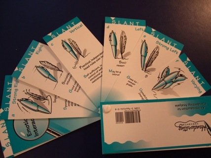
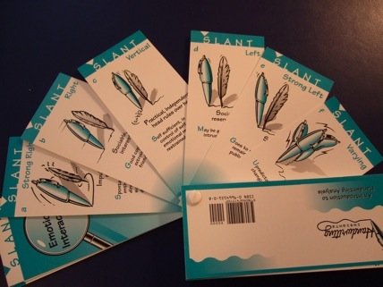

Here's
What Folks Have to Say About Handwriting Insights
A clever, innovative handwriting product... Convenient...
It would make a great gift. -
American Handwriting Analysis
Foundation
Clearly
written, simple to use and insightful without causing
embarrassment, Handwriting Insights seems destined to be a
great icebreaker or group diversion. -
Cynthia Clark's review of Handwriting Insights for
Publisher's Weekly
What does handwrting reveal?
Compare a sample with analysis cards Handwriting Insights
for fun insights into friends and family.
-
Bottom Line
Customers
Love Handwriting Insights!
"When it arrived, my son and daughter and I went into the
kitchen and had a ball for three hours!"
-
Kristen Bell, FL
"I use it with my students, both to help me better
understand them,
and to help raise their self esteem"
-
Ginger Smith, NJ
"Handwriting Insights is a big hit at my office. We analyze
everyone's handwriting.
Even my boss is in on the fun."
-
Peter Wu, CA
"I
use Handwriting Insights when I get birthday cards,
letters, postcards, everything.
I can't stop looking at how people
write."
-
Jeanna Trippini, LA
"We bought 20 for my sister's baby shower last month. The
guests loved them.
We all sat around and laughed. It made the party a huge
success!"
- Anita
Shair, DE
Handwriting Insights was a big success at the Holiday
Gathering Judy and I had yesterday! Someone noticed your
eyecatching box, and we had great fun analyzing each one's
handwriting. -
Diane Coleson, PA
ATTRACTIVE
CARDS FOR LEARNING THE BASICS -
There is a Latin saying, "agere sequitur esse", "doing
follows being". Handwriting is certainly an expression of
our being with all its uniqueness. If you have seen a human
figure drawn according to the functional areas of the
brain, you'd be amazed at how big the hand is in proportion
to the rest of the body. There are studies on the
physiology of handwriting and the connections with the
brain. Others proposed "brainwriting", changing your
handwriting to change your personality. There are so many
potential uses of handwriting analysis, not limited to
entertainement. This set of 64 small, artistic,
aqua-colored and handsomely produced cards, with a pad for
recording according to 11 categories, gives an easy
introduction to the basic essentials. Size represents
personal presence, slant for emotional interactions,
capitals for showmanship, pressure for intensity, baseline
for disposition... They all make very good sense. I would
gladly make this a gift for friends interested in
personalities.
- an Amazon.com review by George Zee
And here's what EBAY Customers have said
ABSOLUTELYº£ø¸ø£ºMARVELOUSº£ø,..
What a lovely set of Handwriting Analysis Cards
Unique
teen gift. Nice seller, Love this item.
My
granddaughter loved the cards. Thanks for your help!
Great!!!
Wonderful Wonderful Wonderful...Any other products??!!!
love the item..love the seller..great transaction. thanks.
neice will love it.
GREAT CHRISTMAS GIFT UNIQUE IN EVERY WAY. THANKS
Awesome
handwriting kit,and fast shipping!
Thanks!
this
was even better than i thought A+ seller
KITS ARRIVED TODAY!! I THINK MY DAUGHTER AND HER BEST
FRIEND WILL LOVE THEM !!!
Thank U, BEAUTIFUL ITEM, SECURELY WRAPPED, HIGHLY
RECOMMENDED,AAAAA+++++
New Age Retailer Magazine's Review-
Finally!
A fun and easy way to begin analyzing handwriting is
available in the Handwriting Insights kit.
This kit is ingenious and makes it possible to analyze
someone's handwriting for fun almost immediately. The kit
includes a book that is actually a set of 6-by-2.5-inch
cards bound together with a single button and a pad of
analysis sheets.
The system is so easy to use that a person can begin
analyzing handwriting five minutes after picking up the
set. A few brief instructions at the front of the book
explain that the pages contain samples of 11 handwriting
traits and advise how to obtain a useful sample of
handwriting. The handwriting pages fan out, allowing users
to easily flip through the choices and select the qualities
that match the handwriting they want to analyze. After the
qualities have been selected, the new "expert" can read
what the quality means by reading the reverse of the card
or by marking boxes on the Individual Insights pad and
reading the meaning printed on the pad. For a complete
picture of the person, it is suggested that the process of
comparison be done with all 11 traits for both a writing
sample and for the signature. The writing sample shows more
how the writer feels, and the signature shows how the
writer behaves. This is fun. It would be great for a small
group of people or a party.
I
analyzed the handwriting of a friend, and the degree of
accuracy was remarkable. I highly recommend this
kit.-
Karen Crane - New Age Retailer Magazine
*******************************************
Experience the thrill of analyzing handwriting! Entertain
family and friends by showing them what their handwriting
reveals.
Handwriting
Insights is a high quality deck of 64 connected,
illustrated cards that teaches you handwriting analysis as
you use it. Analyze handwriting in 5 minutes. Results are
worded constructively so people feel good about what you
have to say.
 

We
are closing out our inventory. While supplies last you can
order your kit
Book Clearing House
for only $10.95.
Or, if you prefer to order over the telephone you can call
Book Clearing House
In the United States, dial toll-free: (800)
431-1579.
International
customers, please call: (914) 835-0015.